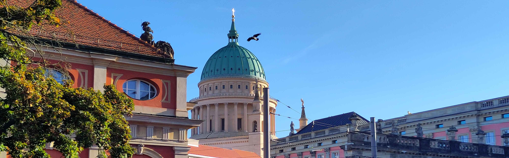

Acanthus Network

We bring together students who want to build beautiful and sustainable cities
We act as mediators to bring together individual architecture students locally and help them start local study groups for classical architecture. Our long term goal is to help architecture students advocate for change in their local university curricula to start teaching classical architecture again.
We empower you to Be the change!

Find local groups
We are a growing network. Find here who is part of it
To the local groups

Guides and recources
You want to set up a group at your local university about classical architecture. We have prepared guides and tutorials how to do this and how we can help.
See useful resources
Some other article and link
Here we can put some other articles or maybe also linkt to other organisations, lists of recommended literature or something like that. link to Social media?
Contact Us here: